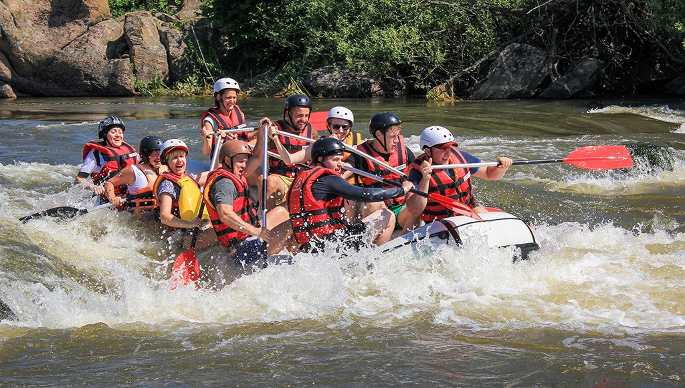
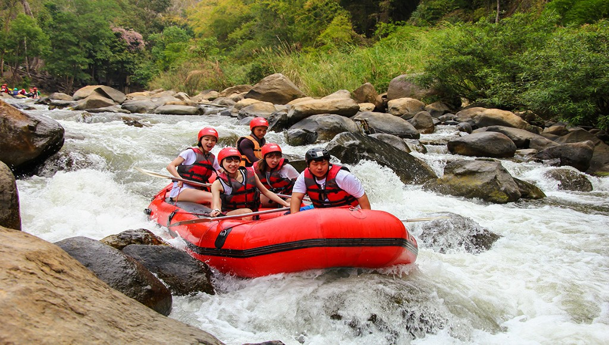

To connect people with the thrill, beauty, and power of the river,creating unforgettable adventures that inspire confidence, teamwork, and a deeper appreciation of the natural world.


Your Next Big Thrill Starts Here.
History
Our rafting company began with one guide, one raft, and a passion for sharing the river. What started as small weekend trips with friends quickly grew as more people discovered the excitement and beauty of our local waters. Over the years, we expanded our routes, added skilled guides, and built a reputation for safety, adventure, and genuine hospitality. Today, we’re proud to offer memorable rafting experiences for all, while staying true to our roots of adventure, teamwork, and respect for the river.